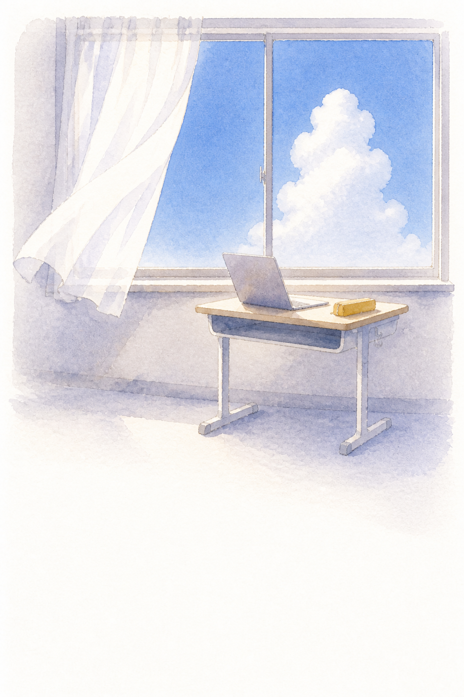
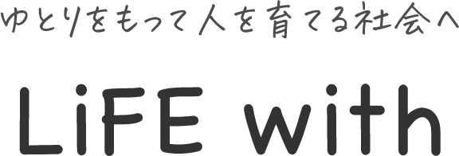
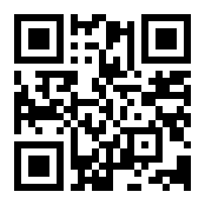

2026年8月24日（月）校内研修
立岩小学校の先生方へ
Gemini & Gemini Notebook ・ Hands-on
画像生成のコツ
AIをうまく使いこなすための60分です。GeminiとGemini Notebookの実践例を見て、あとはたっぷり触ります。この資料は、聞きながら書き込んで、2学期の教室にそのまま持っていける形にしてあります。
外﨑 顯博（とざき あきひろ）
飯塚市立菰田小学校 ・ GEG Chikuho 共同リーダー

Map
今日の地図
やることは2つです。
① 実践例を見る
画像生成で単元の導入をつくる例と、Gemini Notebookで体育の準備をする例。どちらも、ふだんの授業準備の話です。
② 触る
3つの題材（学級開き・授業の導入・解説系）から1つ選んで、自分の教室のために作ります。
60 minutes
5–20
2
実践例を2本 画像生成 ／ Gemini Notebook
20–25
3
頼み方のコツ 言葉にする・渡す・言葉を返す（→p.6）
25–50
4
触る時間 3つから1つ。プロンプトはサイトからコピーできます
50–60
5
見せ合い・まとめ 今日できたものを見せ合います
研修が終わったときの姿
終わったとき、先生方がこうなっていたらいいなと思っています。
- 画像生成を自分の手で経験している
- Gemini Notebookで資料をやさしくまとめられる
- スライドの見た目のルールがちょっと分かる
- 学級開きで「こんなことしよう」が1つ浮かんでいる
✎ 今日いちばん持ち帰りたいもの
（始まる前の気持ちでかまいません。終わったら見返してみてください）
Tools
GeminiとGemini Notebook
まず今日の道具の紹介です。どちらも先生のGoogleアカウントで使えます。
Gemini
なんでも相談できるAIです。文章を書く・アイデアを出す・画像を作るまで、ここでできます。今日の画像生成はこちらを使います。
gemini.google.com
Gemini Notebook
渡した資料の中だけから答えるAIです。ネット全体から適当に答えないので、学校の資料を扱うのに向いています。要約・スライドの下書き・音声の解説ができます。
notebooklm.google.com
Gemini Notebookの基本のやり方
1
notebooklm.google.com を開く
先生のGoogleアカウントでログインします。
2
「新規作成」を押す
ノートが1冊できます。単元ごと・仕事ごとに分けると探しやすいです。
3
資料をアップロードする
PDFやドキュメントを画面にドラッグするだけです。GoogleドライブやURLからも入れられます。これが「ソース」になります。
4
聞きたいことを書く
下の入力欄にふつうの言葉で書きます。マイクを使ってしゃべってもかまいません。
プロンプトとは：AIへの頼みごとの文のことです。むずかしい呪文ではありません。ほしいものを言葉にした、ふつうのお願いです。うまく書けないときは、プロンプト帳の0番「プロンプトを作るプロンプト」（p.9）から始めてください。
Case 1 ・ Image generation
実践例1 画像生成を授業の入口に
AIの画像生成はまだ不十分です。よく見るとおかしいところがあります。授業では、あえてそこを使うことも考えています。4年社会「水害からくらしを守る」の導入で、避難所のイラストをAIに描かせました。頼んだ言葉と、返ってきた絵を、そのまま載せます。
頼んだ言葉（プロンプト原文）
画像を作ってください。
場面：体育館に開設された避難所。人が過ごしている
ねらい：4年生が「おかしいところ」を見つける教材にしたいので、
通路がない・水や毛布が見当たらない・間仕切りがない など、
設備の足りないようすをわざと入れてください。
画風：やさしいイラスト 比率：16:9 文字は入れないでください。

返ってきた絵です。ぱっと見はきれいですが、よく見ると足りないものがあります
教室での出し方
この絵を16:9でどんと映して、ひとこと。
「この絵、へんなところはない？」
気づいた数だけ、単元で調べたいことが生まれます。「10点満点なら何点？」まで進めば、単元の終わりの課題になります。
✎ 自分の教科や単元でやるなら
（わざと不十分な絵が効きそうな場面はありますか）
Case 2 ・ Gemini Notebook
実践例2 Gemini Notebookで体育の準備
学校の資料を渡せば、学校の言葉で返ってきます。体育「バスケットボール型ゲーム」の準備を例にします。
1
年間指導計画と文科省の体育資料を渡す
p.3のやり方で、PDFやドキュメントをそのまま入れるだけです。
2
聞く：「この単元のポイントは？」
子どもに持たせたい見通しも、続けて聞けます。
3
聞く：「うちの学級の人数なら、何人対何人？」
チーム分けの案が、理由つきで返ってきます。
4
頼む：「4年生に伝わる言葉でルール説明スライドを」
下書きがスライドの形になって出てきます。
5
PowerPoint形式で受け取り、Googleスライドで仕上げる
言い方を教室の言葉に直すのは、先生の仕事です。
分担はいつもこれです：下書きはAI、仕上げの判断は先生。単元の見通しも、ルールの言い方も、最後に決めるのは教室を知っている人です。
✎ 自分なら何を渡して何を聞くか
（例：年間指導計画＋指導書の単元ページ／「単元テストまでに押さえることは？」）
How to ask
頼み方は3つ
AIに頼むのは、職員室で人に仕事を頼むのと似ています。前提を渡さなければ違うものが出てくるし、仕上がりのイメージを見せた頼み方は、結果がまるで違います。
1
ほしいものを言葉にする
「何かいい感じに」では、人にもAIにも伝わりません。誰のため・どの場面で・何をしてほしいか。まず自分が言葉にします。言葉にしきれないときは、プロンプト帳の0番がその代わりをします。
2
前提とイメージを渡す
年間指導計画のPDF、学習指導要領、参考にしたい画像。手元の材料を渡すほど、返ってくるものは教室に近づきます。
3
返ってきたものに言葉を返す
いいなら「ここがいい」、違うなら「ここが違う」。一発で当てようとせず、言葉のキャッチボールで寄せていきます。
打たなくていいです：頼みごとはマイクに向かってしゃべれば十分。「えー」「あー」が混じっても、言い直しても、ちゃんと通じます。タイピングの速さは、AIの上手さと関係ありません。
Image basics
画像生成の基礎
いちばん簡単なのに効くのが、縦横の比率を先に伝えることです。使い先が決まれば、比率も決まります。
画像を頼むときの型
この5つを入れると、当たりが早く出ます。順番は自由です。
- 場面：どこで・だれが・何をしている絵か
- 画風：水彩・写真ふう・やさしいイラスト
- 使い先：スライドの背景・プリントの挿絵
- 比率：16:9／4:3／1:1
- 文字は入れない：文字はスライド側で乗せる
✎ 頼んでみたい絵を型で言葉にしてみる
場面：
画風・使い先・比率：
使うときの約束を1つだけ：教科書の紙面や市販教材の画像は、AIに渡さないでください。自分で撮った写真・自分の資料・国や自治体の公開資料が安心です。
Worksheet
学級開きスライド設計シート
2学期の学級開きで、子どもたちに大切にしてほしいこと。スライドを開く前に、ここに鉛筆で書くほうが速いです。
実際に使うイメージはこんな感じです
スライドに書く言葉はこれだけで、続きは口で話します。
① 表紙「2学期はじめます」 ② 夏の写真に「おかえりなさい」 ③「先生が2学期いちばん大切にしたいこと」と出して、なんだと思う？と予想させる ④「『まちがえた』が言える教室」 ⑤「まちがいは みんなのべんきょうになるから」 ⑥「あなたが2学期大切にしたいことは？」 ⑦「2学期もよろしく」
全部で7枚・10分が目安です。このpptxはサイトからダウンロードできます。そのまま差し替えて使ってもらって大丈夫です。
✎ 出しながらしゃべること
（スライドに書かない分が、先生の言葉になります）
Prompts
プロンプト帳
【 】だけ自分の言葉に差し替えてください。コピーして使うときはサイトから（→右下QR）。全部しゃべって伝えてもかまいません。何を頼めばいいか分からないときは、まず0番です。
0 プロンプトを作るプロンプト（Gemini）
やりたいこと：【学級開きで使うスライドを作りたい】
これを、AIへの頼みごとの文（プロンプト）にしてください。
足りない情報があれば、先に私に質問してください。
できたプロンプトは、そのままコピーして使える形で出してください。
A 学級開きスライドの構成（Gemini）
あなたは小学校の学級経営が得意な先生です。2学期の学級開きで使うスライドの構成を考えてください。
伝えたいこと：【あいさつは自分から】／学年：【4年生】／時間：学活のはじめの【10分】
条件：スライドは6枚まで・1枚に伝えることは1つ・子どもに問いかける枚を1枚・各スライドの「見出し」「入れる画像のイメージ」「先生がしゃべること」を分けて書く
B 導入の画像を生成（Gemini）
画像を作ってください。場面：【朝の川原。増水した川が茶色くにごって流れている】／画風：【写真のようにリアルに】／使い先：授業のスライドの背景／比率：16:9／画像の中に文字は入れないでください。
B' わざと突っ込みどころのある絵（Gemini）
画像を作ってください。場面：【体育館に開設された避難所】。【4年生】が「おかしいところ」を見つける教材にしたいので、【通路がない・水や毛布が見当たらない】など設備の足りないようすをわざと入れてください。画風：やさしいイラスト／比率：16:9／文字は入れない。
C 難しい資料をやさしく（Gemini Notebook／Gemini）
渡した資料を、【保護者】に伝わる言葉でまとめ直してください。条件：A4半分くらい・専門用語はふつうの言葉に言いかえる（言いかえられないものは（ ）で短く説明）・「結局なにをすればいいか」を最後に3つの箇条書きで。
D 単元の見通しを聞く（Gemini Notebook）
渡した年間指導計画と資料をもとに教えてください。【体育「バスケットボール型ゲーム」】でいちばん大事にすることは何ですか。【28】人の学級で試合をするなら何人対何人がよいですか（理由も）。第1時で子どもに持たせたい見通しを、子どもに話す言葉で書いてください。
After
研修のあとの相談先
うまくいかなかったら、それはだいたい頼み方で直ります。ひとりで抱えず、聞いてください。
この研修のサイト
今日の内容・プロンプト帳・見本pptx・配布資料PDF・資料庫
アンケート（2分）
試さなかった、うまくいかなかった、どちらもそのままお書きください

公式LINE
研修後の質問はこちらへ。気づいたときに返します
小学校 Geminiプロンプト集
学年・教科・領域から選ぶ授業づくりのプロンプト
School Stock
外﨑が運営する無料・登録不要の教材と実践の棚
2学期の最初の一歩に
今日作りかけたものを、そのまま仕上げて1回使ってみてください。学級開きのスライドでも、導入の1枚でも、保護者向けの文書でも。1回使うと、2回目からは自分の道具になります。分からなくなったら、サイトのプロンプト帳に戻ってきてください。
外﨑顯博 ・ EdtechChikuho@gmail.com
本資料の文章・図版・画像はすべて外﨑の自作です。 © 2026 外﨑顯博